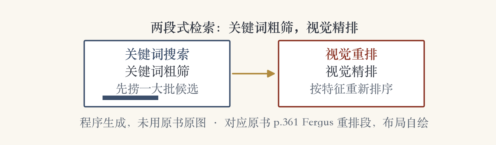
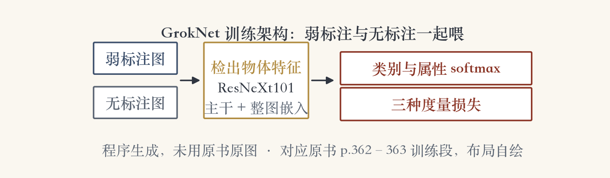

第 6 章 · 深度网络登场
深度网络来了
手工特征：词袋、空间金字塔、部件模型。
书上第 358 页转入深度网络。
这一节的标题就叫「深度网络」。
识别更多交给网络自己学特征。
依据：原书第 358 页
两条线
手工特征：人来设计
深度网络：自己学
本集从 AlexNet 讲到检索
正课第五十集
01 / 16
深度网络 · 一张战报
一张战报：从 AlexNet 开始
2012 年 AlexNet 在 ImageNet 挑战赛上翻盘。
之后识别精度持续提升。
更深的网络、更好的训练算法。
更高效的网络，更大的无标注数据。
依据：原书第 358–359 页
工具与门槛
Classy Vision 开源框架
训练、微调自己的模型
网页上传照片可现场比模型
正课第五十集
02 / 16
细粒度识别 · 实验一
细粒度：把一类再切细
子类差别很细，样本又很少。
例子：花、猫狗、鸟、汽车。
认出大类不难，分清子类才难。
图：大类→细粒度子类→个体。
依据：原书第 359 页
三类识别粒度阶梯：大类→细粒度子类→个体｜程序生成，未用教材或论文原图
正课第五十集
03 / 16
细粒度识别 · 公民科学
公民科学：人人标物种
iNaturalist 让专家和公众一起拍物种、标物种。
细粒度系统给新照片自动贴标签。
大类识别问「这是鸟」。
细粒度要答「这是北红尾鸲」。
依据：原书第 359 页
难在哪
物种差别小
标注靠公众
模型要能自动贴标
正课第五十集
04 / 16
细粒度识别 · 属性与零样本
属性：把认类别变成比特征
用属性描述图像和类别。
比如喙形、羽色、体型。
属性组合能解锁零样本学习。
没见过的类别，也能靠属性认。
依据：原书第 359 页
零样本
训练时没见过这个类别
用属性组合描述类别
靠特征清单对上号
正课第五十集
05 / 16
细粒度识别 · 伪相关警示
小心伪相关
属性总一起出现，容易被误当绑定。
物体和常见场景也会被捆在一起。
换个场景，模型就可能认不出。
出路：度量学习、最近邻相似检索。
依据：原书第 359–360 页
两条暗沟
属性互绑
物体与场景互绑
换场景就失灵
正课第五十集
06 / 16
视觉相似检索 · 三种搜索
让图自己开口：三种视觉搜索
分类打标签，让图库找图更容易。
关键词搜索：用词找图。
实例检索：找同一件东西或地点。
相似检索：找看起来像的图。
依据：原书第 360 页
三种问法
哪一类
同一个
像不像
正课第五十集
07 / 16
视觉相似检索 · QBIC 与 CBIR
两个老名字：QBIC 与 CBIR
QBIC：按图像内容查询。
CBIR：基于内容的图像检索。
早期只比整图相似度。
特征就是颜色、纹理。
依据：原书第 361 页
那时的问题
只会比整图
说不清哪一块像
内容像不像靠碰运气
正课第五十集
08 / 16
视觉相似检索 · 关键词重排
先粗筛，再精排
Fergus 等人用特征学习给关键词结果重排。
关键词负责粗筛，视觉负责精排。
后续用概率潜在语义分析聚类。
排名最高那簇，当作类别代表图。
依据：原书第 361 页

关键词粗筛→视觉重排两级流水线｜程序生成，未用教材或论文原图
正课第五十集
09 / 16
视觉相似检索 · 标注库
标准答案库：LabelMe
LabelMe 是精心标注的图像数据库。
给查询图，能找出相似的标注图。
也能把特征对应和标注库结合。
识别与分割可以同时做。
依据：原书第 361 页
三种用法
找相似标注图
特征对应
同时识别与分割
正课第五十集
10 / 16
视觉相似检索 · 整图描述子
一张图，一个紧凑描述子
Fisher 核、VLAD、池化卷积激活。
一张图压成一个描述向量。
描述子要和度量学习搭配。
像的图在向量空间里挨得近。
依据：原书第 361 页
整图描述子
Fisher 核
VLAD
池化卷积激活
正课第五十集
11 / 16
视觉相似检索 · 组合与综述
拼成端到端系统
深度网络可以和 VLAD 结合。
广义均值池化、动态均值池化。
拼成端到端可调的系统。
Gordo 等人做了综述和实验对比。
依据：原书第 361–362 页
一条光路
各部件可组合
端到端调参
第 7 章还有大规模检索
正课第五十集
12 / 16
视觉相似检索 · 商业案例
GrokNet：长尾商品怎么办
输入照片和购物搜索词。
输出库里相似的商品。
商品太长尾，分类表列不完。
毛皮水槽、电动擦狗器、汽油动力高领毛衣。
依据：原书第 362 页
为什么用检索
分类列不全
直接比像不像
商品库随时增长
正课第五十集
13 / 16
视觉相似检索 · GrokNet 训练 · 实验二
GrokNet 怎么训练
弱标注、无标注的图都用。
先在物体上检特征，再度量学习。
改造 ArcFace 损失+成对间隔损失。
ResNeXt101 主干，83 个损失函数。
依据：原书第 362–363 页

GrokNet 训练架构：弱标注/无标注→ResNeXt101→多损失｜程序生成，未用教材或论文原图
正课第五十集
14 / 16
视觉相似检索 · 商业系统全景
同一把尺子，也量风险
亚马逊、Pinterest、Facebook 都有商品搜索。
大规模相似检索还能排查有害内容。
Facebook 的 SimSearchNet 是例子。
同一套检索，用途不同。
依据：原书第 363 页
两种用途
找想买的商品
找有害内容
底层都是相似检索
正课第五十集
15 / 16
收束 · 下一集人脸识别
本集两件事，下一集人脸
深度网络登场：AlexNet 到细粒度与属性。
视觉检索：QBIC 到 VLAD 与 GrokNet。
特征从手工走向学习。
下一集：人脸识别。
依据：原书第 363 页
交棒
书上第 363 页
人脸识别最成功
下一集专讲
正课第五十集
16 / 16